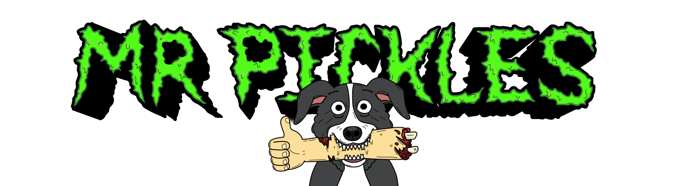

MR Pickles
VER AHORA- Mr. Pickles es una comedia animada para adultos estadounidense creada por Will Carsola
y Dave Stewart para Adult Swim. La serie gira en torno a la familia Goodman,
especialmente a su hijo de 6 años llamado Tommy y al border collie de la familia,
el demonio Mr. Pickles. La serie fue recogida para 10 episodios de un cuarto de
hora para su primera temporada, que se estrenó en la red el 21 de septiembre de 2014
y finalizó el 23 de noviembre de 2014. Se renovó por dos temporadas más, del 17 de
abril al 26 de junio de 2016 y del 25 de febrero al 26 de marzo de 2018. Un capítulo
adicional fungió como finale el 18 de noviembre de 2019.

CyberPunk EdgeRunner
VER AHORA- La historia de Cyberpunk: Edgerunners transcurre en la ciudad estadounidense de Night City, una megaciudad en el Estado Libre de California del Norte. Dicha ciudad sufre una gran corrupción, adicción cibernética y violencia de pandillas. La ciudad está dividida en seis distritos, cada uno de los cuales tiene sus propios requisitos de vida precisos, y está controlada por varias megacorporaciones diferentes, incluidas Arasaka Corporation y su rival Militech Corporation. La historia del anime se desarrolla principalmente en Santo Domingo, el distrito más antiguo, pobre e industrial de Night City..
Isekai Ojisan
VER AHORA- Hace diecisiete años, el tío de Takafumi cayó en coma, pero ahora ha regresado milagrosamente. Takafumi no tardará en descubrir dos cosas muy extrañas: primero que su tío es un gran fan de los videojuegos y segundo que en su tiempo en coma en realidad estuvo en otro mundo donde fue una especie de héroe. Ahora Takafumi no solo tiene que vivir con un tío que es, literalmente, mágico, sino que además tendrá que ponerlo al día sobre dos décadas de avance tecnológico, lo que incluye smartphones, el Internet actual, los tópicos de anime modernos… ¡y el resultado de la guerra de consolas de los 90!